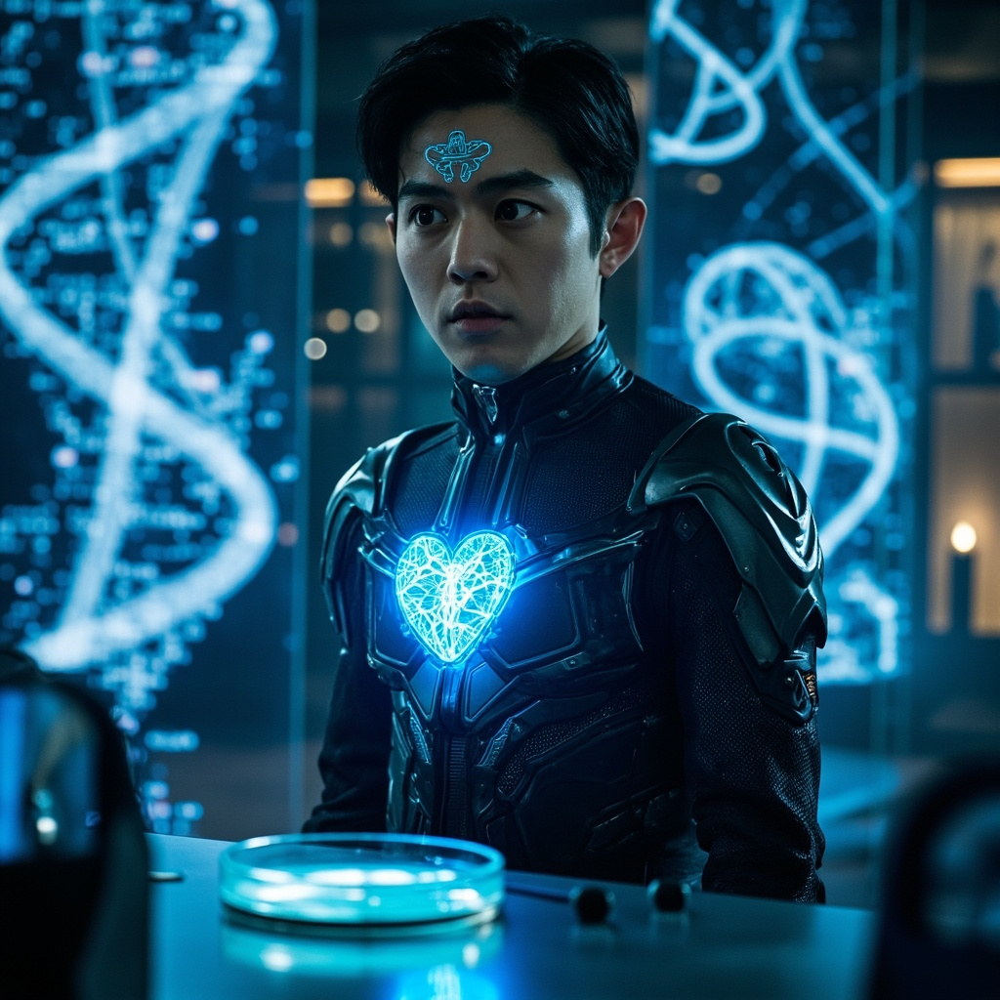
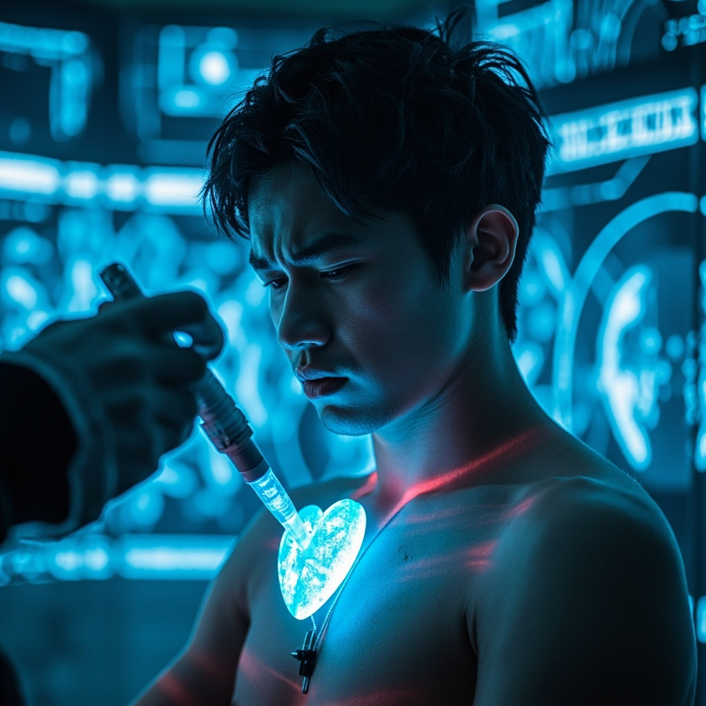
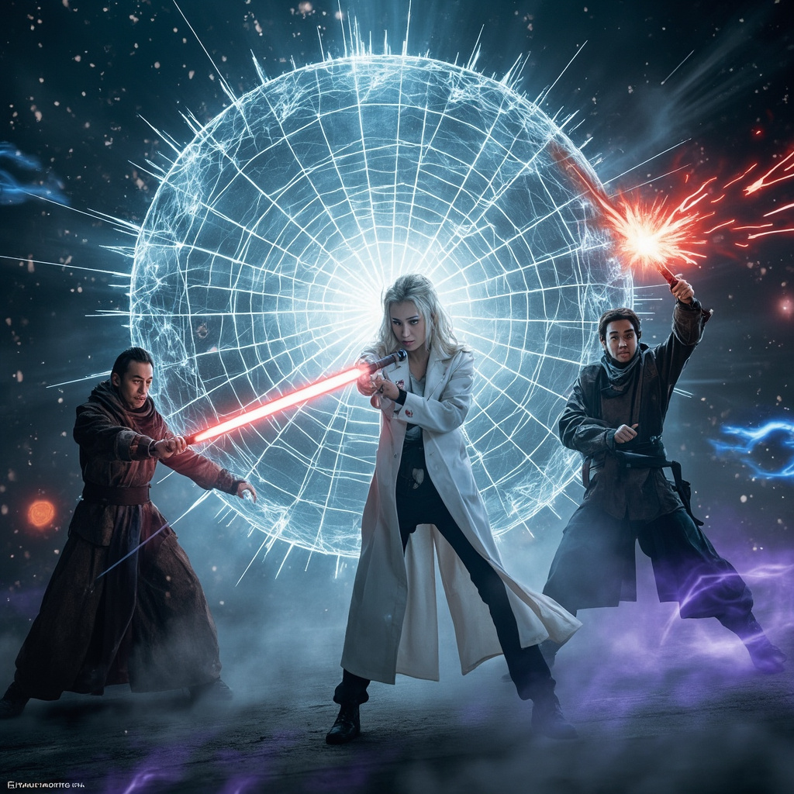
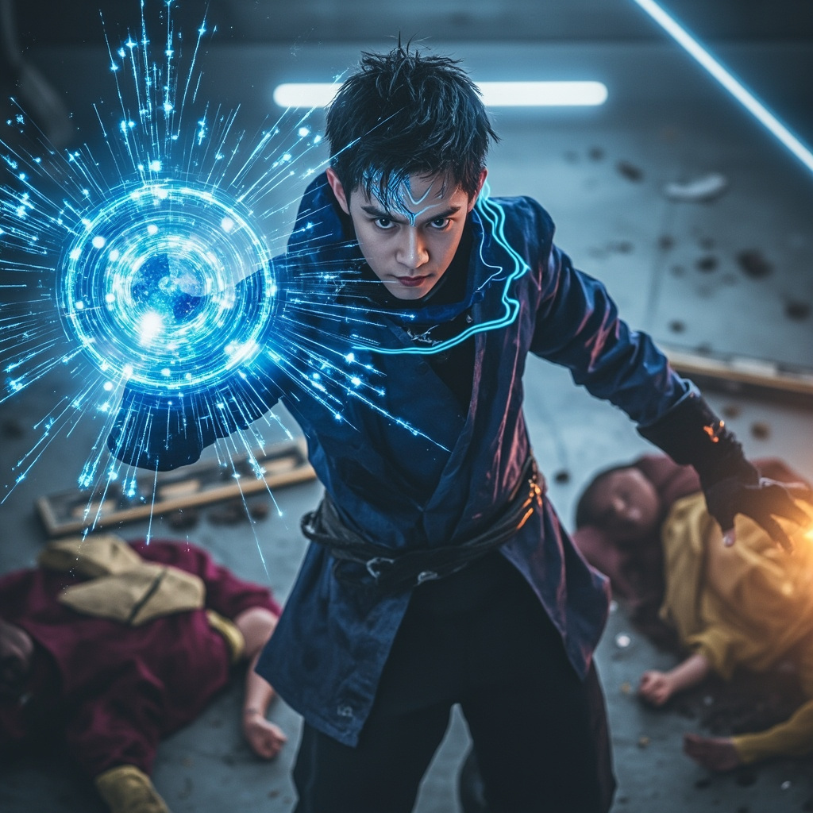

🎧 點擊播放有聲朗讀
林塵在實驗室盯著全息投影中不斷旋轉的基因雙螺旋結構圖，眉頭緊鎖。這是「靈樞芯片」——結合修真界「靈根培育術」與尖端生物納米技術創造的產物。培養皿中，一塊指甲蓋大小的透明凝膠正在微微搏動，內部無數納米級生物電路如同神經網絡般交織，散發淡藍色微光。

林塵脫下上衣，植入器對準左肩胛骨位置。凝膠芯片如同活物般融入他的皮膚，沿著神經網絡向全身擴散。劇痛襲來，每一個細胞都在被重組、被連接、被賦予新功能。蘇雨薇焦急地站在一旁，監測著生命體徵的劇烈波動。

實驗室燈光突然閃爍，三名身穿古式長袍、配備靈能武器的修真者破牆而入。防護罩劇烈震動，出現蛛網般的裂紋。蘇雨薇緊急啟動防禦系統，透明能量護盾在四周升起。為首的修士厲聲喝道：「交出靈芯技術，饒你不死！」

林塵睜開眼睛，瞳孔深處淡藍色數據流如同星河般旋轉。生物芯片計算出敵人《庚金劍訣》的弱點：左肋第三條經脈交接處。他以毫釐之差側身躲避劍氣，同時掌心凝聚真元與生物電能的混合體，一擊制服三名修真者。
三名修真者被控制後，林塵盤膝坐下進入深度冥想。當他閉上眼睛時，看到的不是黑暗，而是由無數數據構成的、流動的世界。靈氣是公式，功法是算法，修真是一場可以優化升級的程序。生物芯片與靈芯系統完美融合，他剛剛獲得了最高權限。